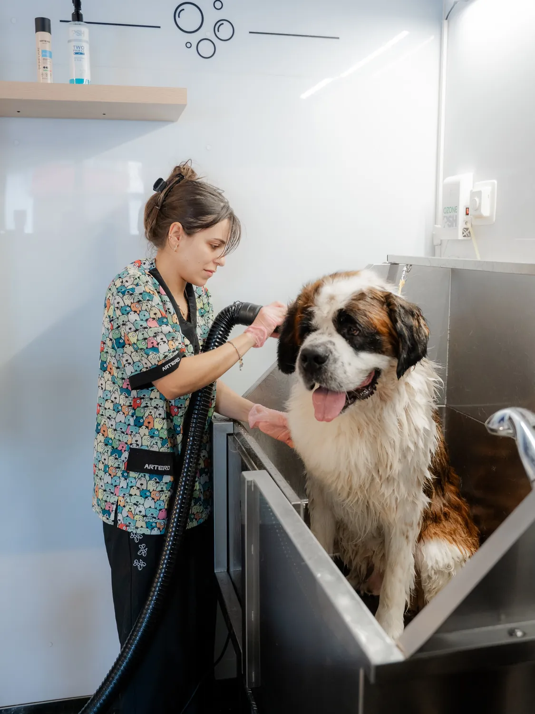
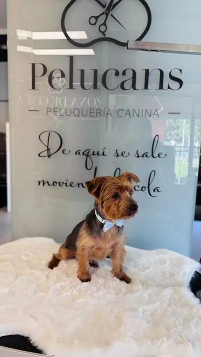

Limpieza a conciencia
Atención al lavado y al aclarado completo.

El placer de volver a abrazarlo recién bañado. Y la tranquilidad de saber que ha estado bien cuidado.
Un buen baño empieza con una revisión del pelo. Observamos los nudos y las zonas delicadas, elegimos los productos y trabajamos el lavado, aclarado y secado con calma, ajustando cada paso a su tolerancia.
El cuidado del manto puede incluir desenredado suave y revisión higiénica de oídos y almohadillas según lo que necesite. Si un nudo no se puede resolver sin molestias, te lo explicamos antes de decidir cómo continuar.
Atención al lavado y al aclarado completo.
Trabajamos el pelo evitando tirones innecesarios.
Valoramos las necesidades de higiene de cada perro.
Perros de todos los tamaños y tipos de pelo que necesiten una sesión de higiene. Adaptamos la experiencia a cachorros, perros mayores y perros que aún están aprendiendo a sentirse cómodos en el salón.


Su ritmo es parte del cuidado.Atención individual · Decisiones contigo
Dejamos que conozca el espacio y revisamos el pelo.
Antes de entrar en la bañera revisamos nudos, zonas delicadas y experiencias anteriores. Cuéntanos si se asusta con el agua, el secador o al tocarle las patas para preparar mejor la visita.
Lavado y aclarado con cosmética adecuada.
Elegimos la cosmética y trabajamos el lavado y el aclarado con atención a todo el manto. Los enredos que no puedan resolverse cómodamente se comentan contigo antes de decidir cómo continuar.

Adaptamos el secado y el cepillado a su tolerancia.
El ruido y el aire no se toleran igual en todos los perros. Ajustamos el proceso a su respuesta y valoramos apoyos, como las orejeras, sin dejar de observar si está cómodo.

Repasamos el manto y los cuidados que necesita.
Repasamos el resultado y comentamos el mantenimiento que necesita. Baño, corte y otros cuidados se concretan al reservar, para que sepas qué servicio se ha acordado y qué conviene revisar después.
Una tarde entera de mimos para un grandullón
Pulsa para reproducir la escena completa aquí mismo, con sonido y controles. Puedes pausar, avanzar o verla a pantalla completa.
Fotos de clientes de Pelucans. Pulsa para ampliar.


La sesión empieza antes de entrar en el salón y continúa con los cuidados de casa.
Avísanos si es su primera visita, si le cuesta entrar en la bañera o si el secador le da miedo. También nos ayuda conocer su movilidad y cualquier zona que prefiera que toquemos con especial cuidado.
Revisamos el pelo antes de mojarlo, seleccionamos el cuidado y organizamos el secado. Las pausas y la protección para amortiguar el ruido se valoran según el perro. Con los grandullones reservamos el tiempo necesario.
Antes de marcharos, pregunta qué zonas conviene cepillar y con qué frecuencia revisar el manto. Si se moja durante los paseos, presta atención al secado y a las zonas donde el pelo tiende a enredarse.
Depende de su piel, pelo y actividad. Te orientamos al conocerlo, especialmente si tiene indicaciones veterinarias.
Avísanos al reservar. Ajustamos el proceso y hacemos pausas, sin prometer que todos los perros tolerarán la misma sesión.
El baño y el corte son necesidades distintas. Al reservar concretamos el servicio y su presupuesto para evitar sorpresas.
Cuéntanos cómo es, qué le gusta y qué necesita. Del resto nos encargamos nosotros, con calma.